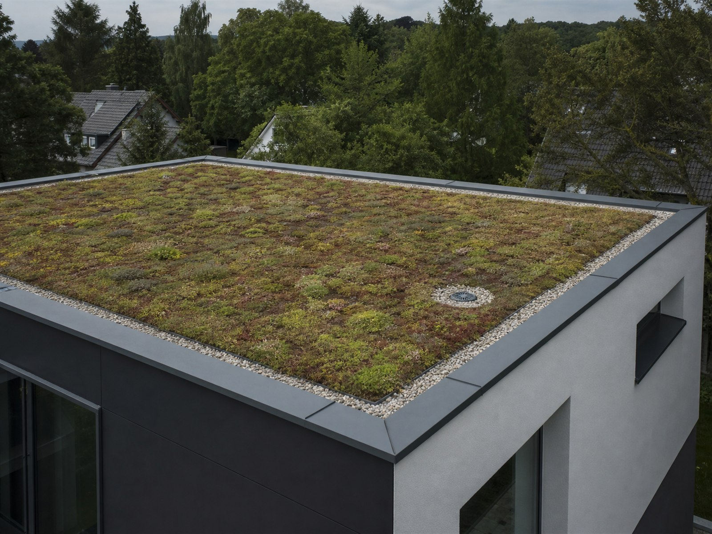

01 / BEGRÜNUNG
Gründach.
- Voraussetzung
- Tragfähigkeit, geeignete Abdichtung, Wurzelschutz und sichere Entwässerung.
- Planungsziel
- Vegetation und Wartungswege auf die vorhandene oder neue Konstruktion abstimmen.
- Wichtig
- Aufbauhöhe, Anschlüsse und Pflegezugänge frühzeitig festlegen.